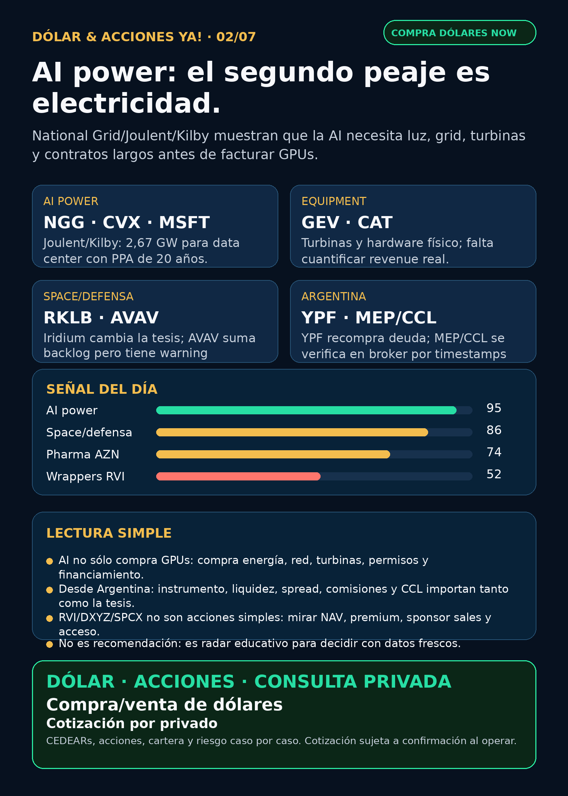

AI power: el segundo peaje es electricidad.
Reporte educativo para Argentina: National Grid/Joulent/Kilby, space, defensa, pharma y wrappers privados con fuentes verificadas.
Texto WhatsApp
Placa del día

Dólar & Acciones YA — 02/07
Lectura simple del día
La señal más importante de hoy no fue “otra acción de AI”. Fue electricidad. National Grid Ventures anunció una inversión de USD 1.750 millones por el 35% de Joulent, y el proyecto base —Project Kilby— apunta a 2,67 GW de energía co-localizada en Texas para un data center operado por Microsoft, con Chevron como socio energético y turbinas de GE Vernova.
En criollo: la AI no se frena sólo por falta de chips. También se frena si no consigue luz, conexión a la red, turbinas, transformadores, permisos y contratos largos. Ese es el segundo peaje de la AI.
Para Argentina, esto no significa salir a comprar cualquier ticker de energía. Significa aprender a separar cuatro cosas: buena tesis, buen precio, buen instrumento y buena ejecución local. Una empresa puede ser buen negocio global y, aun así, no tener CEDEAR líquido, tener spread alto o no calzar con el tamaño/riesgo de una cartera local.
Dato local de la mañana: BlueLytics mostró dólar oficial vendedor $1.511 y blue vendedor $1.525 a las 08:45 Argentina. CriptoYa mostró USDT ask cerca de $1.573 a las 08:46. MEP/CCL por AL30 en CriptoYa figuraban con timestamp viejo del 26/06, así que no los uso como cotización intradiaria para operar; se verifican en broker antes de decidir.
Esto es research educativo. No es asesoramiento financiero ni orden de compra/venta.
Tesis central
La AI se está volviendo una carrera por infraestructura física: generación eléctrica, gas/nuclear, grid, transformadores, cooling, data centers, satélites y defensa. Los chips siguen siendo clave, pero el cuello de botella más nuevo es “speed-to-power”: quién consigue energía confiable antes que el resto.
Ordenado por valor educativo/de radar, no por recomendación de compra:
Señales educativas del día — no ranking de compra
1) National Grid Ventures + Joulent / Project Kilby — energía dedicada para data centers
- Señal: PRNewswire vía TradingView informó el 01/07/2026 que National Grid Ventures acordó invertir USD 1.750 millones por 35% de Joulent LLC. El proyecto fundacional, Project Kilby, apunta a 2,67 GW de power co-located en West Texas para un data center operado por Microsoft bajo PPA de 20 años, con Chevron como socio 50/50 y turbinas GE Vernova.
- Fuente: https://www.tradingview.com/news/prnewswire:ab1411b3f3406:0-national-grid-ventures-to-invest-1-75bn-to-accelerate-power-solutions-for-u-s-data-centers-and-ai/
- Estado: señal fortalecida para AI power. La página directa de National Grid no quedó verificada en la corrida; la fuente usable fue release issuer-syndicated por PRNewswire/TradingView y gate interno ALLOW.
- Accionable internacional/global: proxies a estudiar: NG.L / NGG, CVX, MSFT, GEV, CAT. Falta valuación, exposición real, contratos, capex y timing.
- Accionable local Argentina: acceso CEDEAR/liquidez pendiente para la mayoría. Si se opera desde Argentina, primero broker, spread, comisiones, CCL implícito y tamaño de orden.
- Riesgo: no convertir “aparece GE Vernova” en revenue garantizado para GEV sin desglose contractual.
2) Vistra — flexibilidad financiera en el trade de energía
- Señal: SEC 8-K de Vistra Operations: aumentó aggregate revolving credit commitments de USD 3.440 millones a USD 5.500 millones, efectivo 24/06/2026.
- Fuente: https://www.sec.gov/Archives/edgar/data/1692819/000114036126026944/ef20077059_8k.htm
- Lectura: no es contrato AI ni revenue nuevo. Es balance/capacidad financiera para una empresa dentro de la narrativa power, nuclear/gas y data centers.
- Estado: en radar / fortalece flexibilidad financiera.
- Accionable local Argentina: no asumir CEDEAR ni liquidez local. Verificar instrumento antes de hablar de ejecución.
3) Rocket Lab + Iridium — space pasa de cohetes a red
- Señal vigente 24–72h: Rocket Lab anunció adquisición propuesta de Iridium. La tesis estratégica es pasar de launch a plataforma espacial integrada con red satelital, clientes y revenue recurrente.
- Fuente: https://www.sec.gov/Archives/edgar/data/1819994/000175392626001085/g085783_8k.htm
- Estado: tesis fortalecida con riesgo alto.
- Riesgos: bridge debt, deuda/dilución, S-4, aprobaciones regulatorias, integración y cierre esperado. No confundir “gran historia” con “precio de entrada”.
- Argentina: si se accede vía acción global o CEDEAR/proxy, revisar liquidez, spread y CCL. No operar sólo por titular.
4) AeroVironment — defensa física con backlog real y warning contable
- Señal: AVAV reportó FY2026 con revenue USD 1.976,8 millones, bookings USD 2.700 millones, funded backlog USD 1.200 millones y guía FY2027. Pero el 10-K mantiene material weaknesses vinculadas a BlueHalo/integración.
- Fuentes: https://www.sec.gov/Archives/edgar/data/1368622/000110465926078824/avav-20260629x8k.htm y https://www.sec.gov/Archives/edgar/data/1368622/000110465926078906/avav-20260430x10k.htm
- Lectura: defensa real no es sólo narrativa geopolítica; son contratos, backlog, integración y contabilidad.
- Estado: fortalece tesis / vigilar material weakness.
- Riesgo: alta volatilidad, integración BlueHalo y riesgo de valuación.
5) AstraZeneca — pharma útil hoy viene por oncology, no por hype GLP-1
- Señal: AstraZeneca informó Enhertu aprobado en UE para HER2+ metastatic solid tumours y Datroway recomendado por CHMP para metastatic TNBC primera línea.
- Fuentes: https://www.sec.gov/Archives/edgar/data/901832/000165495426006251/a1370k.htm y https://www.sec.gov/Archives/edgar/data/901832/000165495426006239/a0148k.htm
- Lectura: aprobación UE y recomendación CHMP no son lo mismo; ambas suman al moat oncology/ADC, pero tienen distinto estado regulatorio.
- Estado: señal fortalecida en oncology.
- Red flag: LLY/orforglipron/FDA approval sigue NO VERIFICADO sin fuente primaria Lilly/FDA usable; no se publica como hecho.
6) RVI — más ventas del sponsor, alerta de instrumento
- Señal: Form 4 presentado 01/07: Robinhood Markets vendió shares adicionales de RVI el 29–30/06 y quedó con 13.345.669 shares. Esto se suma a la venta previa de 700.000 shares a USD 30,92 el 25/06.
- Fuentes: https://www.sec.gov/Archives/edgar/data/2085091/000178387926000087/xslF345X06/wk-form4_1782941527.xml y https://www.sec.gov/Archives/edgar/data/2085091/000178387926000085/xslF345X06/wk-form4_1782768825.xml
- Lectura en criollo: RVI no es Nvidia ni Rocket Lab. Es un wrapper/fondo de private markets. Antes de entusiasmarse con “acceso a privados”, se mira NAV, premium/descuento, holdings, sponsor sales, float, liquidez y comisiones.
- Estado: vigilar / riesgo de instrumento.
- Argentina: no asumir disponibilidad ni buena ejecución local.
Watchlist base — seguimiento rápido
- RKLB: señal fuerte vigente por Iridium; tesis mejorada con riesgo alto de deuda, dilución, aprobaciones e integración.
- NVDA: sin señal operacional nueva fuerte hoy; moat estructural en chips/networking/cooling sigue, pero no es headline fresco.
- PLTR: Schedule 13G por beneficial ownership de Surf Air Mobility; señal menor, no catalyst operativo principal.
- TSM / ASML / MU: sin señal primaria nueva más fuerte que lo ya indexado; siguen como columna física de AI.
- GOOGL/GOOG y MSFT: Google sin señal primaria fuerte hoy; Microsoft aparece en Kilby como operador del data center bajo PPA.
- HOOD: señal indirecta por ventas de sponsor en RVI; no evento operativo nuevo de HOOD.
- TSLA / AAPL: revisadas, sin fuente primaria nueva fuerte en esta ventana.
- Gold / GLD / GOLD / B: instrumento ambiguo; no hablar de precio/tesis hasta confirmar si es ETF, minera, oro físico u otro activo.
- SPCX / SpaceX y CBRS / Cerebras: sin filing operativo nuevo hoy; siguen en radar, no headline fresco.
Energía y capa Argentina
- Global: National Grid/Joulent/Kilby es la señal fuerte del día; VST muestra flexibilidad financiera; GEV queda como proxy de equipment por turbinas, pero falta cuantificar exposición.
- Transformadores / power hardware: carril revisado. Mantener radar en GEV, Hitachi/Hitachi Energy, Siemens Energy, HD Hyundai Electric, Hyosung HICO, Virginia Transformer y Delta Star. No confundir Siemens Energy con Siemens AG; no asumir acceso fácil desde Argentina.
- Argentina energía: YPF tuvo recompra de Class XXX Notes por Ps.16.439.915.799,42 equivalente a par value USD 11.144.664 a precio promedio 99,97% del nominal. PAMP, TGS y CEPU revisadas sin señal primaria nueva más fuerte.
- En criollo: “utility” es empresa de servicios/generación/transmisión; puede ser buena tesis por demanda eléctrica, pero tiene regulación, deuda, tarifas, capex y riesgo político.
Fuente YPF: https://www.sec.gov/Archives/edgar/data/904851/000129281426002245/ypf20260701_6k.htm
Pharma / salud
- AZN: señal fuerte por oncology.
- NVO: buyback acumulado dentro de programa hasta DKK 15.000 millones; es soporte de capital, no catalyst clínico.
- LLY: claims de orforglipron/FDA approval quedan NO VERIFICADOS.
- PFE / MRK / AMGN / REGN: revisadas sin señal primaria nueva superior.
Radar amplio fuera de watchlist
- Crypto gobernado / pagos: Open USD sigue como educación de stablecoin rails y pagos, no token trade. Proxies educativos: CRCL, COIN, BLK, V, MA, MELI; falta precio/market data fresco antes de impacto bursátil.
- Autonomous mobility / physical AI: Waymo/Alphabet, TSLA, Zoox/Amazon, Uber y Joby revisados; sin fuente primaria nueva fuerte en esta ventana. PLTR+Surf Air es señal menor de holding estratégico.
- Defensa/aerospace adicional: GE Aerospace, RTX, LMT, NOC, GD, HWM, KTOS, BA e ITA/XAR revisados; sin señal más fuerte que AVAV y RKLB/IRDM.
- Private markets: DXYZ, SPCX, CBRS, ARKVX/AGIX/XOVR/VCX/FAPMI revisados sin filing nuevo fuerte. No vender wrappers como acceso limpio a SpaceX/OpenAI sin NAV/premium/holdings/acceso.
Red flags / hype para ignorar hoy
- “LLY ya tiene aprobación FDA de pastilla GLP-1”: NO VERIFICADO en fuente primaria esta noche.
- “Cualquier empresa con turbina o data center es compra”: falso. Hay que mirar contratos, revenue real, backlog, deuda, valuación y acceso.
- “RVI/DXYZ/SPCX/CBRS son acciones simples”: falso o incompleto. Muchos son wrappers, filings privados o instrumentos con liquidez/premium/riesgo de NAV.
- “SpaceX/SPCX tiene novedad fresca hoy”: sin filing nuevo en esta corrida; no elevar ruido secundario.
Qué mirar después
- Confirmar fuente oficial directa de National Grid/Joulent y detalles de Project Kilby: FID 2026, capex, financing, revenue exposure de GEV/CAT y permisos.
- Revisar broker local: qué instrumentos tienen CEDEAR o acceso real, volumen, spread y CCL implícito.
- Seguir RKLB/IRDM por S-4, deuda, aprobaciones y calendario de cierre.
- Seguir AVAV por remediation de material weaknesses y ejecución post-BlueHalo.
- Actualizar NAV/premium/holdings de RVI/DXYZ antes de cualquier conversación de instrumento.
Servicio privado
Dólar · CEDEARs · Acciones · Consulta privada. Si querés comprar o vender dólares, invertir en acciones o pensar una estrategia financiera más personalizada, escribime por privado y lo vemos caso por caso. Cotización sujeta a confirmación al momento de operar.
Disclaimer
Dólar & Acciones YA es research educativo para decisión humana. No es asesoramiento financiero personalizado, no es recomendación de compra/venta y no promete resultados.